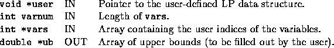

int user_get_upper_bounds(void *user, int varnum, int *indices, double *ub)
The user has to return the upper bounds of the variables whose user indices are given. Note that space for ub is already allocated when this function is invoked. There is no post-processing. The default is to set all the upper bounds to 1.


Only the upper bounds for extra variables are ever asked for since the array of bounds for the base variables is always maintained. Lower bounds for the extra variables must be zero and hence there is no corresponding function for lower bounds.